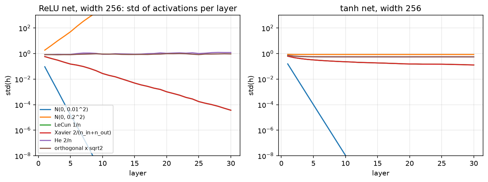

Initialization¶
Why this matters at staff level. Initialisation is where "I know the formula" and "I can derive it" separate cleanly. Interviewers ask you to derive Xavier or He from variance propagation, explain why ReLU halves the variance, and then push to the frontier: why GPT-2 scales residual projections by \(1/\sqrt{2L}\), why the last layer of a residual branch is zero-initialised, and what μP changes about all of it. At staff level you are also expected to debug a training run whose loss is flat or NaN at step 0 and name initialisation as the first suspect.
TL;DR: the interview card¶
- Variance propagation through \(z = \sum_{i=1}^{n_{in}} w_i x_i\) with i.i.d. zero-mean \(w\), \(x\): \(\boxed{\mathrm{Var}(z) = n_{in}\,\mathrm{Var}(w)\,\mathrm{Var}(x)}\). Keep it at 1 per layer or the signal grows/shrinks geometrically with depth.
- LeCun: \(\mathrm{Var}(w) = 1/n_{in}\) (linear/tanh/SELU forward preservation).
- Xavier/Glorot: \(\mathrm{Var}(w) = 2/(n_{in} + n_{out})\), the harmonic compromise between forward (\(1/n_{in}\)) and backward (\(1/n_{out}\)) preservation. Uniform limit \(\sqrt{6/(n_{in}+n_{out})}\).
- He/Kaiming: \(\mathrm{Var}(w) = 2/n_{in}\) for ReLU, because \(\E[\mathrm{relu}(z)^2] = \tfrac12\mathrm{Var}(z)\) for symmetric \(z\).
- Orthogonal: \(W^\top W = I\); preserves norms exactly in linear nets; scale by gain \(\sqrt2\) for ReLU.
- Residual streams: with \(2L\) branches each adding variance \(\sigma^2\), the stream's variance is \(2L\sigma^2\); GPT-2 scales the residual-writing projections by \(1/\sqrt{2L}\) (\(\text{std} = 0.02/\sqrt{2L}\)) to cancel it.
- Zero-init the last layer of each residual branch (Fixup; "zero-γ" for BN) so each block starts as the identity and depth is free at init.
- μP (maximal update parametrisation): choose init and learning-rate scaling with width so that feature updates stay \(O(1)\); hyperparameters tuned on a small model transfer to a large one.
- Biases: zeros (except forget-gate biases in LSTMs, ~1). Embeddings/LM heads: small normal (e.g. 0.02), width-independent by convention in GPT-2.
1. Intuition first¶
Think of a deep network at initialisation as a random signal-processing chain. Each layer multiplies the signal by a random matrix and applies a nonlinearity. If each layer scales the signal's magnitude by a factor \(c\), after \(L\) layers the signal is scaled by \(c^L\): \(c = 0.9\) gives \(0.9^{50} \approx 0.005\) (the signal vanishes into the rounding noise of float32); \(c = 1.1\) gives \(1.1^{50} \approx 117\) (saturating every sigmoid, overflowing every softmax). Only \(c \approx 1\) survives depth. The same argument applies to the backward pass, where the per-layer factor involves \(n_{out}\) instead of \(n_{in}\).

Standard deviation of the activations after each of 30 layers of width 256, for a ReLU
net (left) and a tanh net (right), with unit-variance Gaussian inputs. A fixed
\(\mathcal N(0, 0.01^2)\) init collapses in ten layers; \(\mathcal N(0, 0.2^2)\) explodes
in the ReLU net and saturates tanh at the boundaries; LeCun (\(1/n\)) halves the
variance per ReLU layer (it coincides with Xavier here because \(n_{in} = n_{out}\));
He (\(2/n\)) and orthogonal-with-gain-\(\sqrt2\) hold the ReLU net at \(\sigma \approx 1\) for
all 30 layers. The test test_forward_variance_preserved_through_depth asserts this.
A concrete number: a \(256\to256\) ReLU layer with \(\mathcal N(0, 1/256)\) weights (LeCun) takes unit-variance inputs to pre-activations of variance \(1\), but the ReLU output has second moment \(\tfrac12\). Twenty such layers: \(2^{-20} \approx 10^{-6}\). Doubling the weight variance to \(2/256\) fixes it exactly. That factor of \(2\) is He initialisation.
2. The math¶
2.1 Variance propagation through one layer¶
Let \(z_k = \sum_{i=1}^{n_{in}} W_{ik}x_i\) (bias zero at init). Assume the \(W_{ik}\) are i.i.d. with mean 0 and variance \(\sigma_w^2\), independent of the \(x_i\), and the \(x_i\) are i.i.d. with mean \(\mu_x\) and second moment \(\E[x_i^2] = q\). Then \(\E[z_k] = \sum_i \E[W_{ik}]\E[x_i] = 0\) and
using independence and \(\E[W_{ik}W_{jk}] = 0\) for \(i \ne j\). If the inputs are zero-mean, \(q = \mathrm{Var}(x)\) and
For \(\mathrm{Var}(z) = \mathrm{Var}(x)\) we need \(\mathrm{Var}(w) = 1/n_{in}\): LeCun initialisation. The assumptions to state at a whiteboard: zero-mean, i.i.d. weights independent of inputs; inputs with finite second moment. Nothing about Gaussianity, uniform weights with the same variance work identically.
2.2 The nonlinearity: ReLU halves the second moment¶
The next layer's input is \(x' = f(z)\). For a symmetric zero-mean \(z\) and \(f = \mathrm{relu}\),
because \(z^2\) is even and the indicator selects half of its mass. (The output is no longer zero-mean, but the derivation of §2.1 only needed the input's second moment \(q\), which is what we track.) Chaining \(L\) layers with widths \(n_\ell\):
Setting each factor to 1 gives He (Kaiming) initialisation:
For tanh, which is approximately the identity near 0, \(f(z)^2 \approx z^2\) for small
inputs and the LeCun/Xavier scale is the right one; for large inputs tanh saturates
and the variance is bounded regardless, which is why the tanh panel of the figure
never explodes. PyTorch expresses all of these as \(\mathrm{Var}(w) = \mathrm{gain}^2/n_{in}\)
with \(\mathrm{gain} = \sqrt2\) for ReLU, \(5/3\) for tanh, \(1\) for linear/sigmoid
(torch.nn.init.calculate_gain).
2.3 The backward pass and Xavier's compromise¶
The gradient flows through the same layer transposed: \(\bar x_i = \sum_{k=1}^{n_{out}} W_{ik}\bar z_k\). The identical argument gives
Forward preservation wants \(\mathrm{Var}(w) = 1/n_{in}\); backward preservation wants \(1/n_{out}\). When \(n_{in} \ne n_{out}\) you cannot have both. Glorot and Bengio (2010) took the harmonic mean:
since \(U(-a, a)\) has variance \(a^2/3\). He et al. observed that satisfying either
the forward or the backward condition (not the average) suffices, because a
constant factor per layer that is not compounded across both passes is harmless;
they chose forward, giving \(2/n_{in}\). In practice both fan_in and fan_out modes
exist and the difference matters only for very non-square layers.
2.4 Orthogonal initialisation¶
For a square \(W\) with \(W^\top W = I\), \(\|xW\|_2 = \|x\|_2\) exactly for every \(x\), not just in expectation. A deep linear net initialised orthogonally has all singular values equal to 1 at every depth, so the forward signal and the backward gradient are isometries; Saxe, McClelland and Ganguli (2014) showed this gives depth-independent learning dynamics in deep linear nets, unlike Gaussian init whose product of random matrices has a spread of singular values that grows with depth. With ReLU you still lose the factor \(\tfrac12\) per layer, so multiply by gain \(\sqrt2\) (the figure's "orthogonal × √2" curve). Implementation: QR-decompose a Gaussian matrix and fix the signs of \(R\)'s diagonal so the result is Haar-uniform. Orthogonal init is common for RNN recurrent matrices, where the same \(W\) is applied \(T\) times.
2.5 Residual streams: why branches are scaled by \(1/\sqrt{2L}\)¶
In a pre-LN Transformer block (Part V), the residual stream is updated \(2L\) times (attention and MLP per block):
Because LN normalises the branch's input, each branch output has roughly the same variance \(\sigma_f^2\) regardless of \(\|h_\ell\|\); the branch outputs are approximately uncorrelated at init, so variances add:
The stream grows like \(\sqrt{2L}\) in norm, which changes the effective scale of the
final LN's input and the LM head's logits with depth. GPT-2's fix: initialise the
weight matrices that write into the stream (the attention output projection and the
MLP's second projection) with standard deviation \(0.02/\sqrt{2L}\) instead of \(0.02\)
(the paper states the residual-layer weights are scaled by \(1/\sqrt N\) with \(N\) the
number of residual layers; nanoGPT's model.py implements it as
std = 0.02 / math.sqrt(2 * n_layer)). Then \(\sigma_f^2 \propto 1/(2L)\) and
\(\mathrm{Var}(h_L)\) is depth-independent:
2.6 Zero-init of the last layer: Fixup and zero-γ¶
A stronger version of the same idea: make every residual branch output exactly zero at init, so \(h_{\ell+1} = h_\ell\) and the whole network is the identity (plus the embedding and head) on step 0. Two ways to do it:
- Zero-γ: in a BN-ResNet, set the scale \(\gamma = 0\) in the last BN of each residual branch. The branch output is \(\gamma\hat x + \beta = 0\), gradients still flow to \(\gamma\) (since \(\partial/\partial\gamma = \hat x \ne 0\)) so the branch wakes up during training. Goyal et al. (2017) used this in the large-minibatch ImageNet work, and the "Bag of Tricks" paper ablates it.
- Fixup (Zhang, Dauphin, Ma, 2019): remove normalisation entirely; zero-init the last layer of each branch, scale the other layers in a branch by \(L^{-1/(2m-2)}\) (\(m\) layers per branch), and add scalar biases/multipliers. They trained 10,000-layer ResNets and normalisation-free Transformers this way, the point being that initialisation alone can supply the stability normalisation was credited for.
Why a zero last layer is safe when a zero first layer is not: with \(W_2 = 0\) in \(f(x) = \mathrm{relu}(xW_1)W_2\), the gradient \(\bar W_2 = \mathrm{relu}(xW_1)^\top \bar f\) is nonzero, so \(W_2\) moves immediately; with \(W_1 = 0\) instead, \(\bar W_1\) contains a factor \(W_2\) and the ReLU mask of \(xW_1 = 0\) is all zeros (with our convention), so nothing moves. Symmetry-breaking needs randomness somewhere in every path.
2.7 μP as literacy¶
Everything above keeps the forward and backward signals \(O(1)\) at initialisation. It says nothing about what happens after the first update. Yang et al. (Tensor Programs V, 2022) analyse the updates: with standard parametrisation and Adam, the change in a hidden feature after one step scales with the width \(n\), so the optimal learning rate shrinks as the model widens and must be re-tuned at every scale. The maximal update parametrisation (μP) rescales initialisation variances, output multipliers and per-layer learning rates as functions of width so that every layer's features change by \(\Theta(1)\) per step at any width. The consequence they demonstrate (μTransfer) is that hyperparameters tuned on a small proxy model transfer zero-shot to a much wider one; they report matching or beating published BERT-large and GPT-3 6.7B numbers by tuning only 13M- and 40M-parameter proxies. What you should retain: (1) "init" and "learning rate" are one joint scaling problem, not two; (2) the width-scaling rules differ for SGD and Adam; (3) depth-scaling is a separate, still-evolving story (the \(1/\sqrt{2L}\) rule is its simplest instance).
3. Implementation¶
src/mlbook/nn/init.py. Every initialiser returns a (fan_in, fan_out) array for the
row-major convention \(Z = XW\), so fan_in = W.shape[0].
def xavier_uniform(fan_in, fan_out, rng):
a = np.sqrt(6.0 / (fan_in + fan_out))
return rng.uniform(-a, a, size=(fan_in, fan_out)) # (fan_in, fan_out), Var = 2/(n_in+n_out)
def kaiming_normal(fan_in, fan_out, rng, gain=np.sqrt(2.0)):
std = gain / np.sqrt(fan_in)
return rng.normal(0.0, std, size=(fan_in, fan_out)) # (fan_in, fan_out), Var = gain^2/n_in
def lecun_normal(fan_in, fan_out, rng):
return rng.normal(0.0, 1.0 / np.sqrt(fan_in), size=(fan_in, fan_out)) # Var = 1/n_in
The three scales differ only in the numerator: \(1\) (LeCun), \(2\) (He), and the
harmonic \(2/(n_{in}+n_{out})\) (Xavier). kaiming_uniform uses the limit
\(a = \mathrm{gain}\sqrt{3/n_{in}}\) so that \(a^2/3 = \mathrm{gain}^2/n_{in}\).
def orthogonal(fan_in, fan_out, rng, gain=1.0):
rows, cols = max(fan_in, fan_out), min(fan_in, fan_out)
a = rng.normal(0.0, 1.0, size=(rows, cols)) # (max, min)
q, r = np.linalg.qr(a) # q (max, min) orthonormal columns
q = q * np.sign(np.diag(r)) # sign fix -> Haar-uniform
if fan_in < fan_out:
q = q.T # (fan_in, fan_out)
return gain * q # (fan_in, fan_out)
For non-square shapes you get a semi-orthogonal matrix: orthonormal rows if \(n_{in} < n_{out}\), orthonormal columns otherwise. The sign fix matters: raw QR is not uniformly distributed over orthogonal matrices.
def gpt2_residual_normal(fan_in, fan_out, rng, n_layers, std=0.02):
return rng.normal(0.0, std / np.sqrt(2.0 * n_layers), size=(fan_in, fan_out)) # (fan_in, fan_out)
def activation_std_by_depth(init, activation, width=256, depth=20, n_samples=512, seed=0):
rng = np.random.default_rng(seed)
h = rng.normal(0.0, 1.0, size=(n_samples, width)) # (N, width)
stds = np.zeros(depth) # (depth,)
for layer in range(depth):
w = init(width, width, rng) # (width, width)
h = activation(h @ w) # (N, width)
stds[layer] = h.std()
return stds
activation_std_by_depth is the experiment behind the figure and the test: push a
unit-variance batch through depth random layers and record the std after each.
How you'd test it. (1) Sample a large matrix from each initialiser and check the
empirical variance against the formula to \(3\times10^{-4}\) (test_variance_matches_formula,
parametrised over five initialisers). (2) Check \(W^\top W = I\) / \(WW^\top = I\) for
orthogonal, including non-square. (3) Run the depth experiment and assert He+ReLU
stays in \([0.3, 1.5]\) after 20 layers while LeCun+ReLU collapses below \(0.01\)
(test_forward_variance_preserved_through_depth). PyTorch's torch.nn.init functions
would be the reference for exact distributions, but the variance formulas are the
contract.
Full implementation: src/mlbook/nn/init.py
"""Weight initialisers for the row-major convention ``Z = X W`` (Part III, chapter 4).
``W`` has shape ``(fan_in, fan_out)``: ``fan_in = W.shape[0]`` is the number of
inputs each output unit sums over, which is the quantity that controls the
forward variance (``Var(z) = fan_in * Var(w) * Var(x)``).
"""
from __future__ import annotations
from typing import Callable
import numpy as np
InitFn = Callable[[int, int, np.random.Generator], np.ndarray]
def xavier_uniform(fan_in: int, fan_out: int, rng: np.random.Generator) -> np.ndarray:
"""Glorot & Bengio (2010): ``U(-a, a)``, ``a = sqrt(6 / (fan_in + fan_out))``.
``Var(w) = a^2 / 3 = 2 / (fan_in + fan_out)`` - the harmonic compromise between
preserving forward variance (needs ``1/fan_in``) and backward variance (needs ``1/fan_out``).
Returns ``(fan_in, fan_out)``.
"""
a = np.sqrt(6.0 / (fan_in + fan_out))
return rng.uniform(-a, a, size=(fan_in, fan_out)) # (fan_in, fan_out)
def xavier_normal(fan_in: int, fan_out: int, rng: np.random.Generator) -> np.ndarray:
"""``N(0, 2 / (fan_in + fan_out))``. Returns ``(fan_in, fan_out)``."""
std = np.sqrt(2.0 / (fan_in + fan_out))
return rng.normal(0.0, std, size=(fan_in, fan_out)) # (fan_in, fan_out)
def kaiming_normal(fan_in: int, fan_out: int, rng: np.random.Generator, gain: float = np.sqrt(2.0)) -> np.ndarray:
"""He et al. (2015): ``N(0, gain^2 / fan_in)``; ``gain = sqrt 2`` for ReLU.
ReLU zeroes half of a symmetric distribution, so ``E[relu(z)^2] = Var(z)/2``;
the ``2`` in the numerator cancels that halving. Returns ``(fan_in, fan_out)``.
"""
std = gain / np.sqrt(fan_in)
return rng.normal(0.0, std, size=(fan_in, fan_out)) # (fan_in, fan_out)
def kaiming_uniform(fan_in: int, fan_out: int, rng: np.random.Generator, gain: float = np.sqrt(2.0)) -> np.ndarray:
"""``U(-a, a)`` with ``a = gain * sqrt(3 / fan_in)`` so ``Var(w) = gain^2 / fan_in``."""
a = gain * np.sqrt(3.0 / fan_in)
return rng.uniform(-a, a, size=(fan_in, fan_out)) # (fan_in, fan_out)
def lecun_normal(fan_in: int, fan_out: int, rng: np.random.Generator) -> np.ndarray:
"""``N(0, 1 / fan_in)``: preserves forward variance for linear / tanh / SELU nets."""
return rng.normal(0.0, 1.0 / np.sqrt(fan_in), size=(fan_in, fan_out)) # (fan_in, fan_out)
def orthogonal(fan_in: int, fan_out: int, rng: np.random.Generator, gain: float = 1.0) -> np.ndarray:
"""Saxe et al. (2014): a (semi-)orthogonal matrix scaled by ``gain``.
QR-decompose a Gaussian matrix and fix the signs so the distribution is
Haar-uniform. A square orthogonal ``W`` maps every input norm exactly
(``||xW|| = ||x||``), so depth cannot shrink or blow up the signal in a
linear network. Returns ``(fan_in, fan_out)``.
"""
rows, cols = max(fan_in, fan_out), min(fan_in, fan_out)
a = rng.normal(0.0, 1.0, size=(rows, cols)) # (max, min)
q, r = np.linalg.qr(a) # q (max, min), r (min, min)
q = q * np.sign(np.diag(r)) # make the decomposition unique -> Haar measure
if fan_in < fan_out:
q = q.T # (fan_in, fan_out)
return gain * q # (fan_in, fan_out)
def gpt2_residual_normal(fan_in: int, fan_out: int, rng: np.random.Generator, n_layers: int, std: float = 0.02) -> np.ndarray:
"""GPT-2 scaled init for the projection that writes into the residual stream.
``N(0, (std / sqrt(2 n_layers))^2)``: with ``2 n_layers`` residual branches
(attention + MLP per block) each adding variance ``sigma^2`` to the stream,
the sum has variance ``2 L sigma^2``; the ``1 / sqrt(2L)`` keeps it at
``sigma^2`` regardless of depth. Returns ``(fan_in, fan_out)``.
"""
return rng.normal(0.0, std / np.sqrt(2.0 * n_layers), size=(fan_in, fan_out)) # (fan_in, fan_out)
def zeros(fan_in: int, fan_out: int, rng: np.random.Generator) -> np.ndarray:
"""All-zero weights (Fixup / zero-gamma style: the residual branch starts as identity)."""
return np.zeros((fan_in, fan_out)) # (fan_in, fan_out)
def activation_std_by_depth(
init: InitFn,
activation: Callable[[np.ndarray], np.ndarray],
width: int = 256,
depth: int = 20,
n_samples: int = 512,
seed: int = 0,
) -> np.ndarray:
"""Push ``N(0,1)`` inputs through ``depth`` layers; return the std after each layer.
Returns ``(depth,)``. Used by the chapter-4 figure and the variance tests.
"""
rng = np.random.default_rng(seed)
h = rng.normal(0.0, 1.0, size=(n_samples, width)) # (N, width)
stds = np.zeros(depth) # (depth,)
for layer in range(depth):
w = init(width, width, rng) # (width, width)
h = activation(h @ w) # (N, width)
stds[layer] = h.std()
return stds
Retype by hand¶
| Symbol | File | Target time | Test |
|---|---|---|---|
xavier_uniform, xavier_normal, kaiming_normal, kaiming_uniform, lecun_normal |
src/mlbook/nn/init.py |
6 min (derive the variance of each as you type) | pytest tests/test_nn_init.py -k variance_matches -q |
gpt2_residual_normal |
src/mlbook/nn/init.py |
2 min | pytest tests/test_nn_init.py -k gpt2 -q |
activation_std_by_depth |
src/mlbook/nn/init.py |
5 min | pytest tests/test_nn_init.py -k depth -q |
Fine to just read: orthogonal (know why QR + sign fix; the code is plumbing),
zeros.
Full drill: all initialisers plus the depth experiment: 15 minutes. Grader:
pytest tests/test_nn_init.py -q. Whiteboard drill: derive \(\mathrm{Var}(z) = n\,\mathrm{Var}(w)\,\mathrm{Var}(x)\)
and the He factor of 2 in under 5 minutes.
4. Systems view: cost, failure modes, trade-offs¶
Cost. Initialisation is free at runtime; its cost is in tuning. A wrong init does not crash. It produces a loss that is flat (vanished), NaN at step 1 (exploded), or a network that trains but to a worse optimum, and you pay in engineer-hours and GPU-hours to discover it. This is the argument for μP: pay the analysis once, transfer the hyperparameters.
Failure modes and their signatures.
| Symptom at step 0–10 | Likely cause | Check |
|---|---|---|
| Loss \(\approx \log K\) and flat; gradient norms \(\sim 10^{-8}\) at early layers | Vanishing: init too small, or sigmoid/tanh saturation | Per-layer activation std (should be \(\sim 1\)) |
| NaN / inf loss at step 1; softmax overflow | Exploding: init too large, or residual stream growing with depth | Per-layer activation std; logit magnitude |
| Loss much larger than \(\log K\) at step 0 | Output layer too large (confident random predictions) | Initial loss should be \(\approx \log K\); shrink the head init or zero it |
| Trains, but many units at exactly 0 forever | Dead ReLUs from a large first step + bad init | Fraction of zero activations per layer |
| Deep ResNet trains worse than a shallower one | No zero-γ / branch scaling; stream variance grows with \(L\) | Norm of the residual stream vs depth |
Interaction with normalisation. BatchNorm/LayerNorm after a layer make the forward variance independent of the weight scale, which is why BN-ResNets tolerate sloppy init. They do not make the backward scale-independent (a larger \(W\) gives a smaller gradient through the norm), and they do nothing for the residual-stream growth of §2.5, which is why pre-LN Transformers still need the \(1/\sqrt{2L}\) scaling. Chapter 5 derives the backward.
Interaction with the optimiser. Adam normalises update magnitudes per parameter, so a badly scaled init is partly corrected by the optimiser, and partly not: the first steps move every parameter by \(\approx \eta\) regardless of its scale, which for a tiny init is a huge relative change. That is the standard-parametrisation pathology μP fixes. Under SGD the update scales with the gradient, so init and learning rate are coupled the other way. See Part I, optimization.
When to use what.
| Layer / setting | Init | Rule |
|---|---|---|
| Linear/conv before ReLU | He (fan_in) |
Cancels the \(\tfrac12\) of ReLU. |
| Linear before tanh/sigmoid/softmax, or linear-only | Xavier / LeCun | Forward and backward both \(\approx\) preserved. |
| RNN recurrent matrix | Orthogonal | Same matrix applied \(T\) times; needs unit singular values. |
| Transformer weights (GPT-2 recipe) | \(\mathcal N(0, 0.02^2)\), residual projections \(\times 1/\sqrt{2L}\) | Width-agnostic by convention; depth handled by the residual scaling. |
| Last layer of a residual branch | Zero (Fixup) or zero-γ (BN) | Block starts as identity; depth is free at init. |
| Classifier head with \(K\) classes | Small or zero; bias = log prior for imbalanced data | Step-0 loss \(\approx\) entropy of the prior, not \(\gg \log K\). |
| Scaling a model up in width | μP | Transfer LR and init from a proxy instead of re-sweeping. |
5. In production¶
OpenAI: GPT-2's scaled residual init (2019)
The GPT-2 report describes a modified initialisation that accounts for the
accumulation on the residual path with depth: the weights of residual layers
are scaled by \(1/\sqrt N\) with \(N\) the number of residual layers. Karpathy's
nanoGPT reproduces it as std = 0.02 / math.sqrt(2 * config.n_layer) on every
c_proj.weight. The trade-off: a two-line change that removes depth-dependence of
the residual-stream variance, at no runtime cost, instead of relying on the final
LayerNorm to absorb it. Sources: Radford et al., Language Models are Unsupervised
Multitask Learners, cdn.openai.com PDF;
nanoGPT model.py.
Facebook AI: zero-γ in large-minibatch ImageNet training (2017)
In Accurate, Large Minibatch SGD, Goyal et al. train ResNet-50 with minibatches of 8192 across 256 GPUs in one hour. Among the implementation details they report is initialising the scale \(\gamma\) of the last BatchNorm in each residual block to 0, so every block starts as the identity; combined with linear LR scaling and a 5-epoch warmup, this let the large-batch run match the small-batch accuracy. Source: arXiv:1706.02677. The Amazon "Bag of Tricks" study ablates the same zero-γ trick on ResNet-50: arXiv:1812.01187.
Microsoft Research: He init for the first super-human ImageNet result (2015)
He et al. derived the \(2/n\) variance for rectifier nets and showed that with Xavier-scaled init a 30-layer ReLU network stalled while the same network with the corrected scale trained from scratch. The deeper PReLU-nets they trained this way reached 4.94% top-5 error on ImageNet, the first result below the 5.1% human estimate. Source: arXiv:1502.01852.
Microsoft / OpenAI: μTransfer for hyperparameter transfer (2022)
Yang et al. parametrised models in μP and tuned learning rate, init scale and other hyperparameters on small proxies, then transferred them zero-shot: they report outperforming published BERT-large with total tuning cost equal to one BERT-large pretraining run, and outperforming the 6.7B GPT-3 by transferring from a 40M-parameter proxy at 7% of the pretraining cost. The trade: a more careful parametrisation (per-layer LR and init rules) in exchange for not re-sweeping hyperparameters at every scale. Source: arXiv:2203.03466.
MIT / Google: Fixup: 10,000-layer ResNets without normalisation (2019)
Zhang, Dauphin and Ma showed that rescaling a standard init (zero last layer per branch, depth-dependent scaling of the others, scalar biases) trains residual networks as stably as BatchNorm does, including 10,000-layer ResNets and a normalisation-free Transformer for machine translation. It is the cleanest evidence that much of what BN "does" at init is variance control that init alone can supply. Source: arXiv:1901.09321.
6. Interview questions and strong answers¶
Derive He initialisation. What assumptions did you make?
For \(z = \sum_{i=1}^{n} w_i x_i\) with independent zero-mean \(w_i\) of variance \(\sigma^2\) and inputs with second moment \(q\): \(\E[z^2] = n\sigma^2 q\). Through a ReLU, for symmetric \(z\), \(\E[\mathrm{relu}(z)^2] = \tfrac12\E[z^2]\). So the second moment after one layer is \(\tfrac12 n\sigma^2 q\); for it to equal \(q\), \(\sigma^2 = 2/n\). Assumptions: weights independent of inputs, zero-mean, i.i.d.; pre-activations symmetric about 0 (true at init with zero-mean weights); tracking second moments rather than variances (the ReLU output is not zero-mean, which is fine because the next layer's formula only needs \(\E[x^2]\)). Staff follow-up: why does it stop mattering after a few hundred steps? The weights are no longer independent of the data, and normalisation layers or adaptive optimisers take over the scale. Init controls where you start, not where you end.
Why does GPT-2 scale some weights by \(1/\sqrt{2L}\) and not others?
Only the matrices that write into the residual stream, attention output projection and the MLP down-projection. Each of the \(2L\) branches adds an (approximately independent, LN-normalised) contribution of variance \(\sigma_f^2\), so the stream's variance grows as \(2L\sigma_f^2\). Scaling those writers by \(1/\sqrt{2L}\) makes \(\sigma_f^2 \propto 1/(2L)\) and the sum depth-independent. The reading matrices (\(Q, K, V\), MLP up-projection) see LN-normalised inputs, so their scale does not compound with depth. Staff follow-up: what would zero-init of the writers do instead? Every block is exactly the identity at step 0 (Fixup-style); it trains fine and is arguably cleaner, but you lose the small random symmetry-breaking that lets different blocks specialise from step 1.
Your 48-layer pre-LN Transformer's loss is NaN at step 3. What do you check, in order?
(1) Step-0 loss: should be \(\approx \log V\); if it is much larger, the LM head or embedding scale is wrong. (2) Per-layer residual-stream norm at init: growing \(\propto\sqrt{\ell}\) means missing \(1/\sqrt{2L}\) scaling. (3) Attention logits' scale: missing \(1/\sqrt{d_k}\) or too-large \(Q/K\) init gives a saturated softmax and huge gradients. (4) Learning rate and warmup: NaN at step 3 (not step 1) is the signature of an update, not the init, check the LR schedule and gradient clipping. (5) Mixed precision: fp16 overflow in the softmax or the loss; use bf16 or a loss scaler. I would fix the init issues first because they are free and deterministic, then revisit the LR.
What is μP in two minutes, and when would you actually use it?
Standard parametrisation keeps activations \(O(1)\) at init but lets the per-step change of hidden features scale with width under Adam, so the optimal LR drifts as you widen. μP chooses width-dependent multipliers for init variance, output scale and per-layer LR so that feature updates are \(\Theta(1)\) at every width; the optimal hyperparameters then become width-stable and can be tuned on a small model and transferred. I would use it when I am about to train a model an order of magnitude wider than anything I have tuned, and cannot afford a sweep at the target size, which is every frontier pretraining run. I would not bother for fine-tuning or for models I can sweep directly. Staff follow-up: does it handle depth? Not in the original paper; depth-μP is a separate line of work, and in practice people combine width-μP with residual scaling like \(1/\sqrt{2L}\).
Why zero-init the last layer of a residual branch but never the first?
With \(f(x) = \mathrm{relu}(xW_1)W_2\) and \(W_2 = 0\): \(f = 0\) so the block is the identity, and \(\bar W_2 = \mathrm{relu}(xW_1)^\top\bar f \ne 0\), so \(W_2\) starts learning immediately from a random, symmetry-broken \(W_1\). With \(W_1 = 0\): \(\bar W_1\) carries a factor \(W_2\) and the ReLU mask of an all-zero pre-activation, both kill it, and all hidden units would receive identical gradients even if they did not. Zero must sit after the randomness on every path. In BN-ResNets the same effect is obtained with \(\gamma = 0\) in the last BN (zero-γ), which Goyal et al. used at 8k batch size.
7. Exercises¶
★ Xavier uniform limit. Show that \(U(-a, a)\) with \(a = \sqrt{6/(n_{in}+n_{out})}\) has variance \(2/(n_{in}+n_{out})\).
Solution
\(\mathrm{Var}(U(-a,a)) = a^2/3 = 6/(3(n_{in}+n_{out})) = 2/(n_{in}+n_{out})\).
★ Depth of collapse. With LeCun init and ReLU, after how many layers does a unit-variance signal fall below float32's smallest normal number (\(\approx 10^{-38}\))?
Solution
The second moment halves per layer, so the std falls by \(\sqrt2\) per layer: \(2^{-L/2} < 10^{-38} \Rightarrow L > 2\cdot 38\log_2 10 \approx 252\) layers. Long before that, at \(\sim 40\) layers, the signal is \(10^{-6}\) and gradients are numerically meaningless, depth is lost well before underflow.
★★ Residual-stream growth (coding). Simulate a 48-block pre-LN residual stream
in NumPy where each branch is LN -> Linear(d,4d) -> relu -> Linear(4d,d) with He
init for the first Linear and either He or GPT-2-scaled init for the second. Plot
\(\|h_\ell\|/\sqrt d\) against \(\ell\) for both. Confirm the \(\sqrt{\ell}\) growth and its removal.
Solution
import numpy as np
from mlbook.nn.init import kaiming_normal, gpt2_residual_normal
from mlbook.nn.normalization import LayerNorm
d, L, rng = 128, 48, np.random.default_rng(0)
for name, second in [("he", lambda: kaiming_normal(4*d, d, rng)),
("gpt2", lambda: gpt2_residual_normal(4*d, d, rng, n_layers=L, std=np.sqrt(2/(4*d))))]:
h = rng.normal(size=(64, d)) # (N, d)
norms = []
for _ in range(L):
x = LayerNorm(d).forward(h) # (N, d)
f = np.maximum(x @ kaiming_normal(d, 4*d, rng), 0) @ second() # (N, d)
h = h + f
norms.append(np.linalg.norm(h, axis=1).mean() / np.sqrt(d))
print(name, np.round(norms[::12], 2))
★★ Step-0 loss sanity check. For a 1000-class head initialised \(\mathcal N(0, \sigma^2)\) on unit-variance 512-dim features, compute the expected initial cross-entropy as a function of \(\sigma\) (numerically) and find the \(\sigma\) above which it exceeds \(\log 1000 + 1\).
Solution
Logits have variance \(512\sigma^2\); sample and average \(-\log\softmax(z)_y\) over random \(y\). The loss equals \(\log K\) only as \(\sigma \to 0\) and grows roughly like the logit std beyond it; numerically the "\(+1\) nat" threshold sits near logit std \(\approx 1.5\), i.e. \(\sigma \approx 1.5/\sqrt{512} \approx 0.066\), larger than a typical \(0.02\) but smaller than He's \(\sqrt{2/512} \approx 0.0625\) is not (they are comparable), which is why classifier heads are often initialised smaller than hidden layers, or zeroed.
★★★ Backward variance with ReLU. Extend §2.3: show that with He init the gradient variance is preserved when \(n_{in} = n_{out}\), and compute the factor per layer when \(n_{out} = 4n_{in}\) (an MLP up-projection). What does this imply for very non-square layers?
Solution
\(\bar x_i = \sum_{k=1}^{n_{out}} W_{ik}\,\bar z_k\) and \(\bar z_k = \bar h_k\,1[z_k > 0]\), with the
mask active half the time, so \(\mathrm{Var}(\bar x) = \tfrac12 n_{out}\sigma_w^2\mathrm{Var}(\bar h)\).
With \(\sigma_w^2 = 2/n_{in}\) this is \((n_{out}/n_{in})\mathrm{Var}(\bar h)\): exactly preserved
for square layers, multiplied by 4 for a \(d\to4d\) layer and by \(\tfrac14\) for the
\(4d\to d\) that follows. Over a pair (up then down) the factors cancel, which is
why He-fan_in works for MLP blocks; for a lone very wide layer you would use
fan_out mode or Xavier to split the difference.
References¶
- Glorot, X., Bengio, Y. (2010). Understanding the difficulty of training deep feedforward neural networks. AISTATS. proceedings.mlr.press/v9/glorot10a
- He, K., Zhang, X., Ren, S., Sun, J. (2015), ICCV. PReLU and the He/Kaiming initialisation for rectifier networks. arXiv:1502.01852
- Saxe, A. M., McClelland, J. L., Ganguli, S. (2014). Exact solutions to the nonlinear dynamics of learning in deep linear neural networks. ICLR. arXiv:1312.6120
- Radford, A. et al. (2019). Language Models are Unsupervised Multitask Learners. cdn.openai.com
- Karpathy, A. nanoGPT. github.com/karpathy/nanoGPT
- Zhang, H., Dauphin, Y. N., Ma, T. (2019). Fixup Initialization: Residual Learning Without Normalization. ICLR. arXiv:1901.09321
- Goyal, P. et al. (2017). Accurate, Large Minibatch SGD: Training ImageNet in 1 Hour. arXiv:1706.02677
- He, T. et al. (2018). Bag of Tricks for Image Classification with Convolutional Neural Networks. arXiv:1812.01187
- Yang, G. et al. (2022). Tensor Programs V: Tuning Large Neural Networks via Zero-Shot Hyperparameter Transfer. arXiv:2203.03466
- Xiong, R. et al. (2020). On Layer Normalization in the Transformer Architecture. arXiv:2002.04745. why pre-LN needs less warmup; see chapter 5.